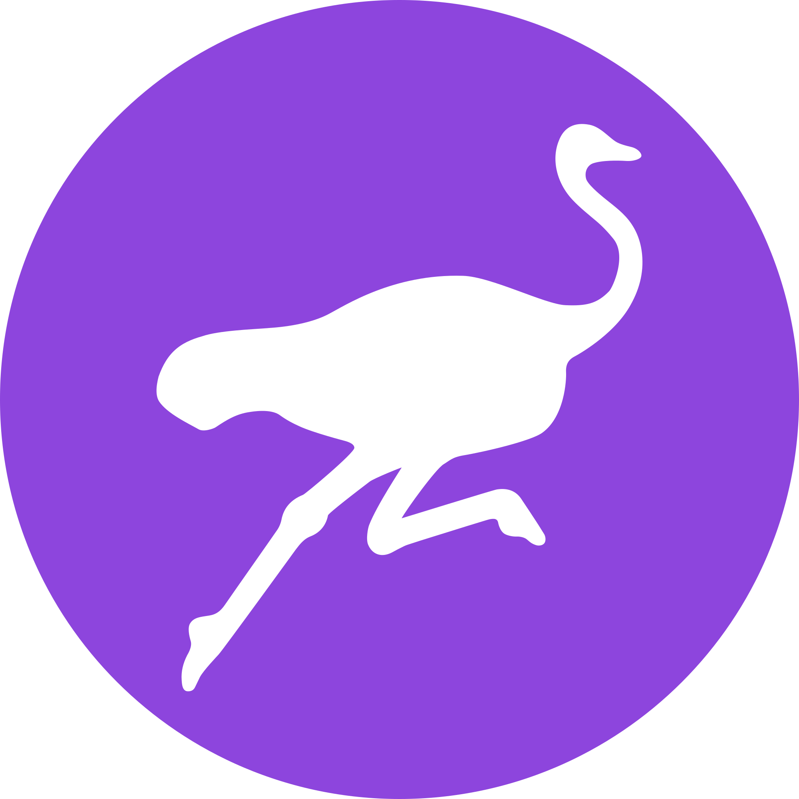

TheBenMeadows
Websites
My Art & Tech Blog
Index of All Art Pieces
Artist Profile (Outdated)
HUG Artist Profile (Outdated)
Projects & Posts
Art & Tech Highlights (Blog Post)
Recent Public Speaking (Blog Post)
#DailyMuse (6 Months of Daily Art)
Bitcoin Ordinals: Saving with SVGZ
